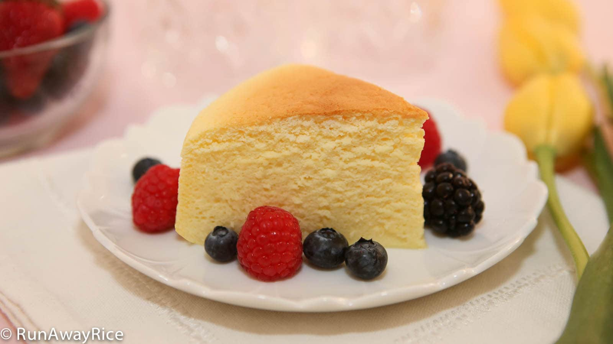
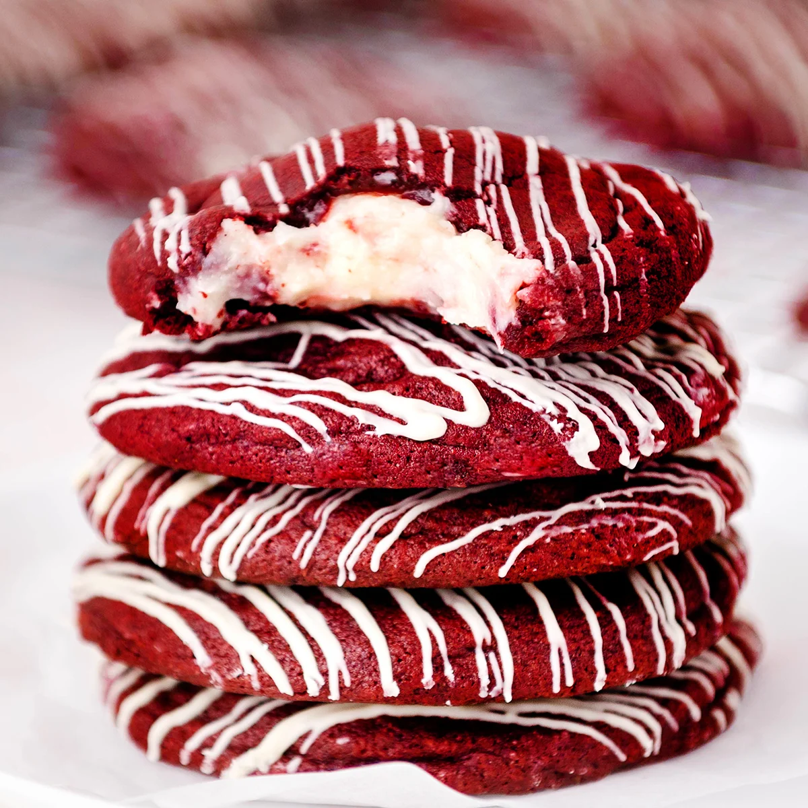
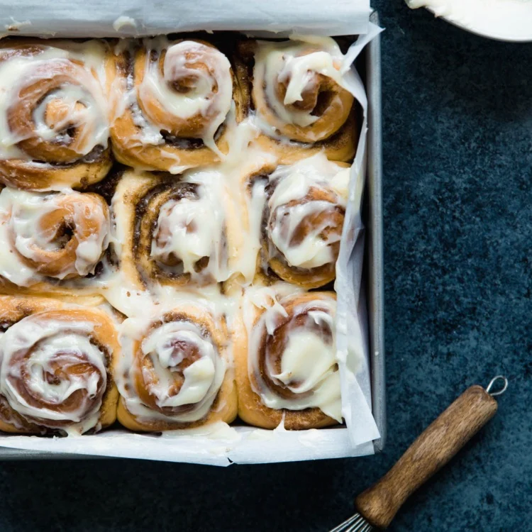
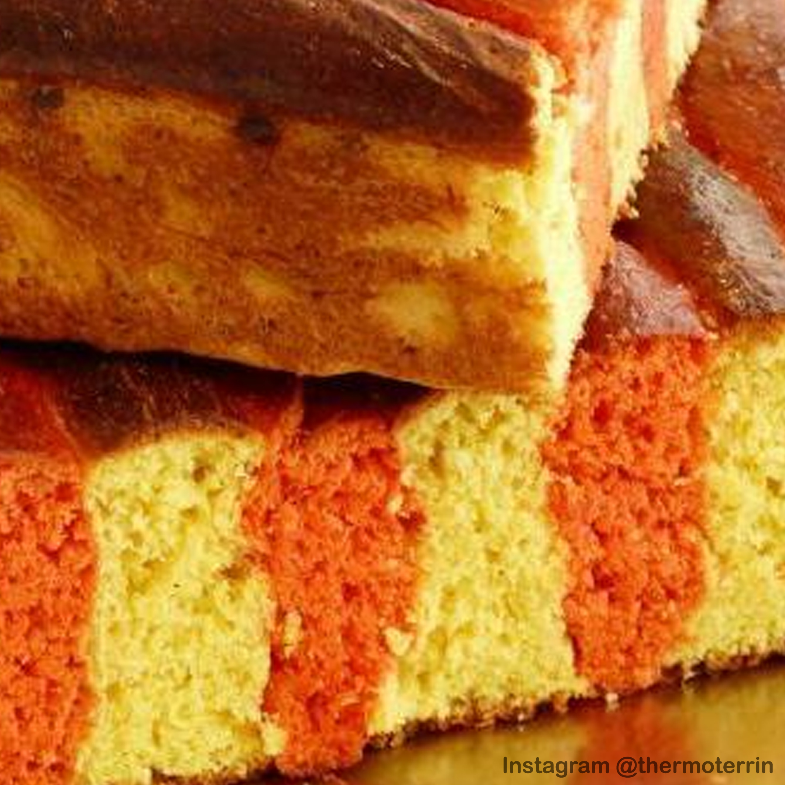

Receptes
Pastissos i Magdalenes

Pà de pessic japonès
Ous, crema tàrtar, sucre, formatge crema, llet, mantega, farina, midó de blat
Llegir mésPastes i Galetes

Galetes Red Velvet
Cacau, colorant, sucre, formatge crema, ous, farina, sal, llet, mantega
Llegir més

Pans artesans

Cinnamon Rolls
Canyella, mantega, llevat, farina, llet, sucre, ous, sal, sucre glass
Llegir més
Festes

Coca de Sant Jordi
Llet, formatge, mantega, sucre, llevat, farina, sal, cúrcuma, sobrasada
Llegir més